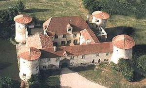
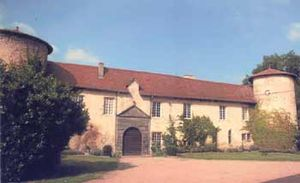
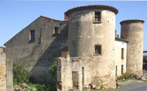
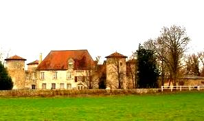
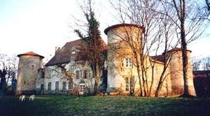
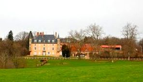
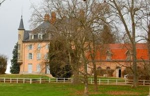
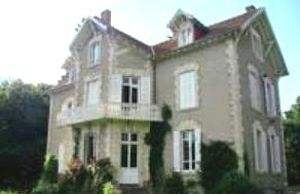

Recensement Jean-Claude Truffet
| Département | 63 — Puy-de-Dôme |
| Canton | Billom |
| Commune | Neuville |
| Type d'édifice | Château |
| Période d'origine | XIII-XIV |








CHEIX, Guillaume Rastier est seigneur du Cheix en 1303. Le château passe à Pierre de Mascon, seigneur du Cheix et de Neuville, dont la famille du même nom en fut propriétaire pendant cinq siècles. Le dernier des Mascon, François Balthazar, se marie en 1774 à Marie-Anne de La Saigne de Saint-Georges. Ils ont pour fille unique Elisabeth de Mascon qui épouse en 1790 son voisin Joseph Benoït de Pierre, marquis dAulteribe, seigneur de la Chassaigne, décédée sans prospérité en 1842. Puis le château passe à Louis Dessaigne, décédé au Cheix en 1913. Passe à Joseph Dessaigne en Août 1944, suite au décès de sa mère, née Marie Thialler en juillet 1944. Il est vendu à Henri Rabet et Madame née Marie-Camille Pintrand qui le laisse à labandon. Il est acheté pour les terres en 1962 par la famille Dauzat, agriculteurs, vendu à Michel Pancracio le 26 janvier 1970. Vendu en quasi-ruine à la famille Cornut-Gentille le 23 novembre 1974 qui, durant vingt cinq ans, jusquà la mort de monsieur Jean-Jacques Cornut Gentille, le restaurèrent . Enfin, il est vendu le 17 août 2004 à monsieur Pierre Chassaigne, président fondateur du groupe immobilier Mercure France et madame née France Sauzier, son épouse, qui oeuvrent avec autant de passion que leurs prédécesseurs pour terminer loeuvre gigantesque de ces derniers.
MOULINS, un bâtiment existe aux Moulins dans le dernier quart du XVIe siècle, mais aucun vestige de cette époque ne semble avoir été conservé, le bâtiment actuel date probablement de la 1ère moitié du XIXe siècle, après cette date, passe de la famille Théallier à la famille de Chamerlat qui le transforme, dans la deuxième moitié du XIXe siècle.
PERCHE En 1440, Urbain d'Oradour est seigneur de Bêthel et La Perche. Son fils puîné, Bertrand d'Oradour, est la tige des seigneurs de La Perche et de Mezel. En 1526 et 1550, Jean d'Oradour, écuyer, est seigneur de La Perche, Mezel et Janilhat. En 1686 le fief est toujours aux Oradour. Avant 1699, Jacques de Lobière du Bouchet est seigneur. Après 1726, Blaise de Bournat et en 1771, Anne de Bournat sont dits seigneurs de La Perche.
Château de Cheix construit au XIIIe siècle, importants réa ménagements au XVIIe siècle, il est à l'état de ruine dans la 2e moitié du XXe siècle, mais a conservé son organisation générale, quatre corps de bâtiments assemblés autour d'une cour rectangulaire et flanqués à chaque angle par une tour ronde, le tout sans doute entouré d'eau, le corps de bâtiment à l'est, en particulier, a été entièrement reconstruit; utilisation pour la restauration de remplois provenant de Clermont Ferrand et des environs, encadrements d'ouvertures en andésite, la ferme du château du Cheix au sud, de l'autre côté de l'allée d'entrée, date peut-être du XVIIe siècle, à la Révolution, les quatre tours sont considérées comme signe de la féodalité à abattre, mais elles ne seront pas détruites, c'est peut être à partir de cette époque que le château est laissé à l'abandon.
Château du Moulins ajout en particulier des trois petites tourelles d'angle et de l'étage de comble, construction des écuries et du bâtiment agricole attenant, à l'est du bâtiment principal, et aménagement d'une chapelle dans l'angle sud-est du logis, après 1834 également, mais à une date indéterminée, il s'agit vraisemblablement de dépendances agricoles, au sud et au nord du château, et d'un premier logis de ferme qui était accolé à la ferme actuelle située au nord du château. Le château de La Perche est situé face à l'église, enceinte quadrangulaire à flanquements cylindriques d'angle, il en reste deux accolés à un logis de deux niveaux, les cheminées sont adossées aux pignons. Chambres d'hôtes Sylvia Van-der-Tol.
Famille de Guillaume Rastier
Famille Théallier Famille de Bertrand d'Oradour
"
Château de Cheix, du Moulins et de la Perche